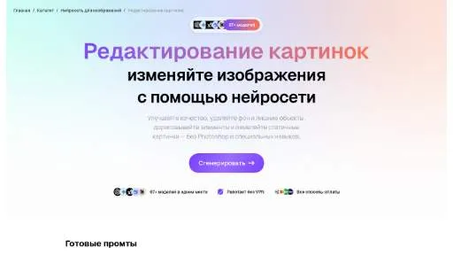

МолекулаАгрегаторы нейросетей
Молекула объединяет модели для текстов, изображений, видео и музыки. В одном аккаунте можно подобрать инструмент под этап работы, сохранить инструкции проекта и использовать готовые роли.
К задаче в МолекулеРаздел «Редактирование изображений»: варианты ИИ для этой задачи, описания возможностей и переходы к обзорам. Сравните несколько решений на одинаковом примере.
Доработайте готовую иллюстрацию для обложки, изменяя только второстепенные элементы. Укажите цвет фона и предметы, которые нужно сохранить; сравните главный силуэт, края и освещение, чтобы правка окружения не изменила характер изображения.
Измени фон моей иллюстрации на светлый песочный, убери мелкие декоративные звёзды по краям. Сохрани центральную фигуру, её позу, цвета одежды и направление освещения, надписей не добавляй.

Молекула объединяет модели для текстов, изображений, видео и музыки. В одном аккаунте можно подобрать инструмент под этап работы, сохранить инструкции проекта и использовать готовые роли.
К задаче в Молекуле«ArtVenture» готовит визуальные материалы по заданию. Дополнительно «ArtVenture» помогает исправлять и оформлять фотографии.
«Benzin.io» отделяет объект от фона изображения.
«Colorize» добавляет цвет к чёрно-белому снимку.
«OptiClean» помогает исправлять и оформлять фотографии.
«Storybeat» помогает исправлять и оформлять фотографии.

Aitubo создаёт изображения из эскизов с помощью ИИ, включая игровые материалы и фотографии. В продукте также представлены мультяшные визуальные варианты. Редактор позволяет изменять созданные изображения и уточнять художественные ресурсы, связывая генерацию и дальнейшую обработку в одном процессе.
Для «ImgTools» сначала определите свою задачу и требуемый результат. Карточка относится к направлению «Генерация изображений».
«Pixelcut» отделяет объект от фона изображения. Дополнительно «Pixelcut» убирает выбранные объекты из визуального материала.
Spyne помогает готовить и редактировать фотографии автомобилей в виртуальной студии. Пользователь настраивает фон и работает с представлением товара на специализированной платформе. Дополнительная возможность связана с проверкой автомобиля, чтобы объединять визуальную подготовку объявления и рассмотрение сведений о машине при продаже.
«AfterShoot» помогает исправлять и оформлять фотографии.
«Magickimg» помогает исправлять и оформлять фотографии.
«Visio Studio» отделяет объект от фона изображения. Дополнительно «Visio Studio» помогает исправлять и оформлять фотографии.
«AI Photo Editor (aiphotoeditor.ai)» помогает исправлять и оформлять фотографии.
«Cartoon Yourself» помогает исправлять и оформлять фотографии.
«Cutout Pro» помогает исправлять и оформлять фотографии.
Movavi Picverse редактирует фотографии в настольной программе с ИИ-улучшением изображения. Пользователь может убирать окружение, выполнять ретушь и работать с RAW-исходниками. Экспорт предусматривает разные размеры и форматы, объединяя правку снимка с подготовкой подходящего файла для дальнейшего просмотра, размещения или передачи в другую программу.
«Pixian AI» отделяет объект от фона изображения.
«Photopea» помогает исправлять и оформлять фотографии.
Для «AI Marvels - HitPaw» сначала определите свою задачу и требуемый результат. Карточка относится к направлению «Редактировать изображение».
«Blend» отделяет объект от фона изображения. Дополнительно «Blend» помогает с задачами поискового продвижения.
«Freelogodesign» подготавливает варианты логотипов.
«Glorify 3.0 Design» отделяет объект от фона изображения. «Glorify 3.0 Design» готовит визуальные материалы по заданию.
«Magic Background Remover» отделяет объект от фона изображения.

PicWish используют, чтобы менять фотографии с учётом выбранного оформления. Ещё одно направление работы: создавать и уточнять визуальный макет.
Prisma преобразует фотографии с помощью художественных и портретных стилей. В наборе предусмотрены замена окружения, рамки и средства дальнейшего редактирования. Инструмент ориентирован на изменение визуальной подачи снимка, где выбранный стиль сочетается с оформлением и дополнительной правкой вместо одного неизменяемого эффекта для всех фотографий.
RetouchMe — приложение для заказа ретуши фотографий. Пользователь отправляет снимок и выбирает нужные изменения, а обработкой занимаются дизайнеры, работающие с Photoshop. Среди задач представлены правки фона, цвета и портрета. Перед заказом определите детали, которые нужно сохранить, и проверьте полученный результат по исходнику.
«Facet 2.0» помогает исправлять и оформлять фотографии.
Let’s Enhance обрабатывает фотографии средствами ИИ и создаёт изображения по текстовому описанию. Среди возможностей есть подготовка товарных снимков и восстановление материалов низкого качества. Пакетное редактирование дополняет визуальные инструменты, связывая обработку нескольких изображений с дальнейшей работой над выбранными фотографическими материалами.
«AirBrush Studio» помогает исправлять и оформлять фотографии.
«Autobg» помогает исправлять и оформлять фотографии.
Depth меняет визуальную глубину резкости фотографии с использованием ИИ-данных о расстояниях в сцене. Приложение предназначено для работы после съёмки, когда нужно изменить воспринимаемую область фокуса или подготовить объёмный эффект. Обработка связана с картой глубины, а не с повторной съёмкой исходного объекта другой камерой.
Dewatermark AI помогает находить и удалять водяные знаки на изображениях, а для сложных участков предлагает ручную кисть. После обработки сравните восстановленную область с соседними деталями и проверьте текстуры. Используйте инструмент с материалом, который вправе изменять; удаление отметки не меняет условий лицензии исходного изображения.
«Unlimited BG AI Background Removal Tool» отделяет объект от фона изображения.
«BGBye» отделяет объект от фона изображения.
«Designify (designify.com)» отделяет объект от фона изображения.
«Everypixel» представлен в разделе «Русские». При выборе проверьте нужную операцию и условия работы с результатом.
«Evoto AI» помогает исправлять и оформлять фотографии.
«Lensa» помогает исправлять и оформлять фотографии.
«Picsman AI» помогает исправлять и оформлять фотографии.
«Retouch4.me» помогает исправлять и оформлять фотографии. Дополнительно «Retouch4.me» помогает править исходный видеоматериал.
«SwaperFace» меняет лицо в визуальном материале. Дополнительно «SwaperFace» работает с материалами для социальных площадок.
«AI photo restorer» помогает исправлять и оформлять фотографии.
«Cliclic AI» помогает исправлять и оформлять фотографии.
«ClipDrop Replace Background» отделяет объект от фона изображения. «ClipDrop Replace Background» также убирает выбранные объекты из визуального материала.

Hotpot.ai объединяет графические инструменты и подготовку контента с участием ИИ. Среди возможностей есть удаление фона и восстановление снимков, а также шаблоны макетов. Создание публикаций для соцсетей и доступ через API дополняют работу над визуальными материалами пользователя.
PicPicAI объединяет несколько ИИ-операций над изображениями, включая улучшение снимка, удаление окружения и портретную ретушь. Есть восстановление старых фотографий, варианты причёсок и генерация портретов или мультяшных образов. Продукт предназначен для разных направлений обработки, сочетая изменение внешней подачи с доработкой качества исходного изображения.
«PixelPerfect» отделяет объект от фона изображения. Дополнительно «PixelPerfect» помогает исправлять и оформлять фотографии.
Страница 1 из 2